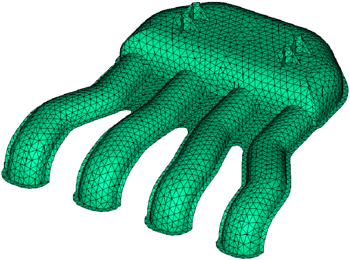
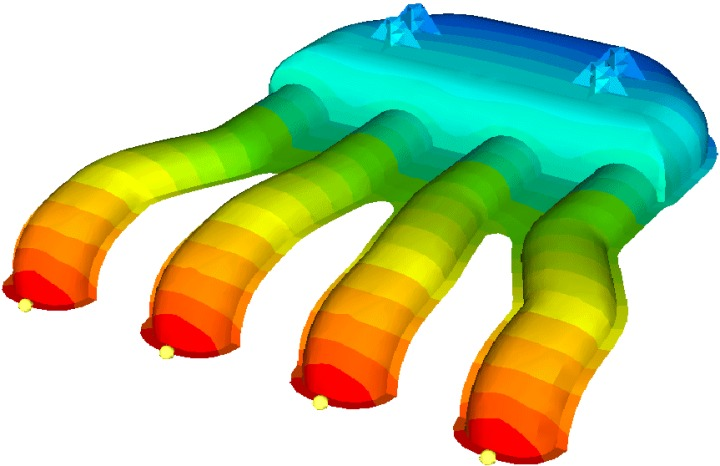
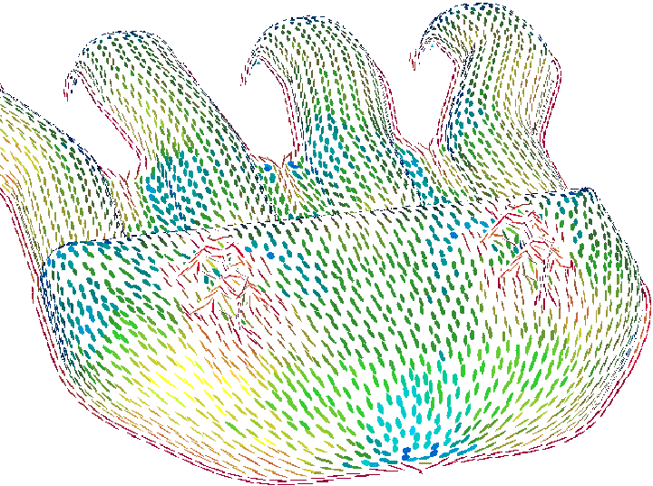
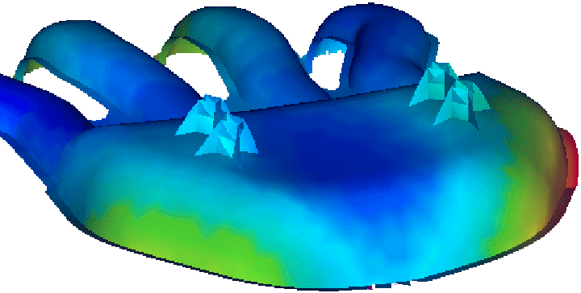
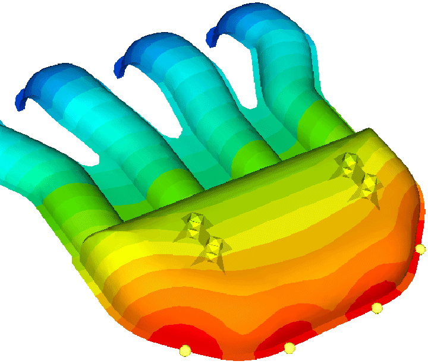
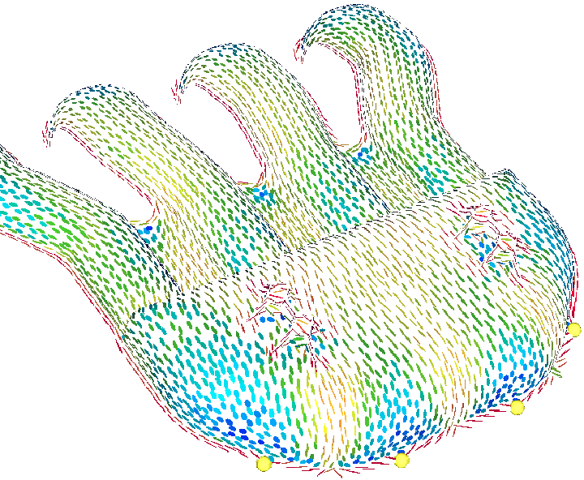
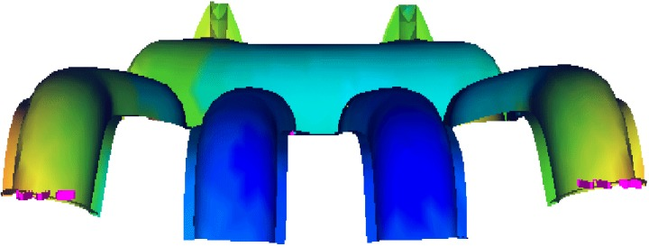
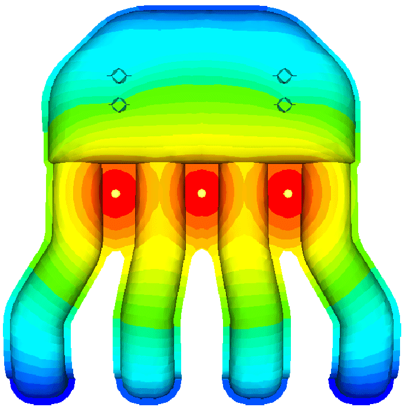
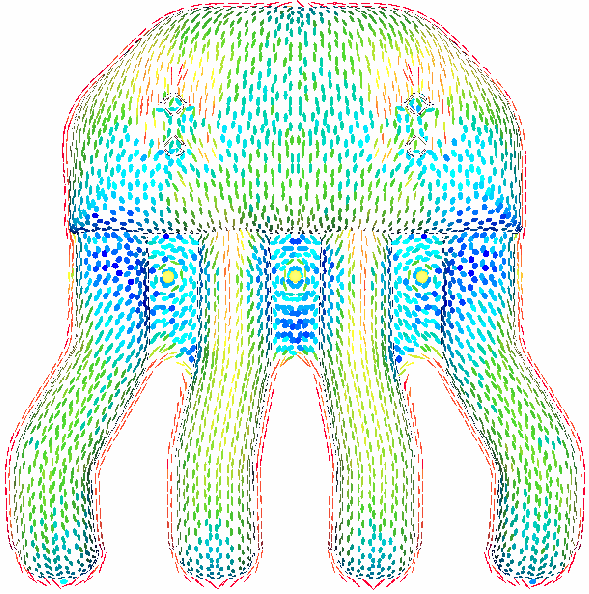
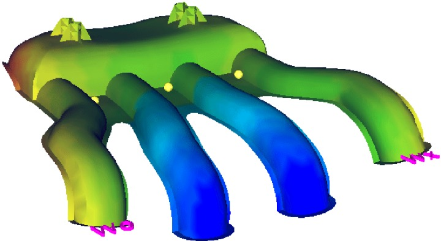

|

Þekil 11: Að (Mesh) örülmüþ model
Tabiî ki ilk yapýlmasý gereken iþlem parçanýn að yapýsýnýn doðru bir þekilde oluþturulmasýdýr. Bu iþlemin teknik detaylarý bu yazý içerisinde yer almayacak, analiz programlarýnýn imalatta nasýl kullanýlmasý gerektiði üzerinde durulacaktýr.
Parçamýzda ilk verilmesi gereken kararýn doðru yolluk giriþinin tespit edilmesi olduðunu belirtmiþtik. Plastik enjeksiyon analiz programlarý bize seçtiðimiz þartlarda oluþabilecek sonuçlarý gösterirler. Bu sebeple analiz programýný kullanan kiþilerin imalat tecrübelerini kullanarak çeþitli alternatifler yaratmasý ve bu alternatifleri analiz ederek en doðru olaný içlerinden seçmeleri gerekir.
Bu parçanýn üç farklý plastik giriþi deðerlendirilip aralarýndan çarpýlma miktarlarýna göre seçim yapýlacaktýr.
Ýlk alternatifimizde aþaðýdaki þekilde görüldüðü gibi bir eriyik giriþi düþünülmüþtür.


Þekil 12: Birinci alternatif malzeme giriþleri ve fiber yönlenmesi
Þekilde sol taraftaki parça üzerinde soðuma renklerle belirtilmiþtir ve görüldüðü gibi plastik giriþinin olduðu dört noktada malzeme hala sýcak iken arka kýsýmda plastik donmaya baþlamýþtýr. Sað tarafta ise dolum sýrasýnda kalýp boþluðu içerisindeki fiber yönlenmeleri görülmektedir ve katký maddesinin dolumun son gerçekleþtiði bölgede karþýlaþtýðý net bir biçimde takip edilebilmektedir.

Þekil 13: Birinci alternatif çarpýlma analiz sonucu (1,9 mm)
Parçanýn çarpýlma analiz sonucu incelendiðinde sol tarafta yeþil ve sað tarafta kýrmýzý ile görülen bölgeler arasýnda toplam çarpýlma miktarýnýn 1,9mm olduðu tespit edilmiþtir.
Ýkinci alternatifimizde aþaðýdaki þekilde görüldüðü gibi bir eriyik giriþi düþünülmüþtür.


Þekil 14: Ýkinci.alternatif malzeme giriþleri ve fiber yönlenmesi
Yukarýdaki þekilde de görüldüðü gibi ikinci alternatifte malzeme giriþleri yine dört noktadan fakat parçanýn tam ters tarafýnda seçilmiþtir. Bu durumda oluþacak fiber yönlenmeleri de sað tarafta görülmektedir.

Þekil 15: Ýkinci alternatif çarpýlma analiz sonucu (2,2 mm)
Bu durumda þekilde pembe olarak gösterilen kontrol noktalarý arasýndaki toplam çarpýlma 2,2mm olarak gerçekleþmiþtir.
Üçüncü alternatifimizde aþaðýdaki þekilde görüldüðü gibi parçanýn orta bölümünden üç noktadan eriyik giriþi düþünülmüþtür.


Þekil 16: Üçüncü alternatif malzeme giriþi ve fiber yönlenmesi

Þekil 17: Üçüncü alternatif çarpýlma analiz sonucu (4,3 mm)
|